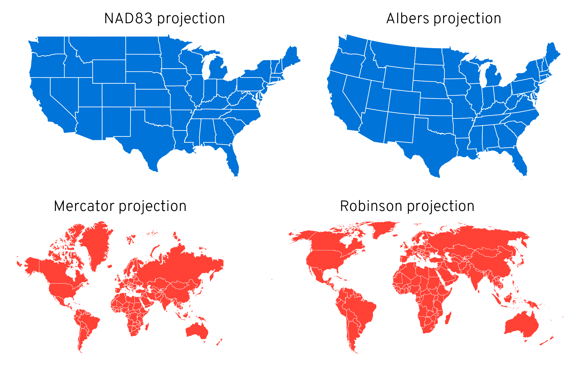

Preprocessing
Misc
- Conflation Types (i.e. geospatial joins)
- Notes fromConflating Overture Places Using DuckDB, Ollama, Embeddings, and More
- Recommends using String Similarity. Then use Embeddings on the remaining unmatched. Shows an 80% match. Can get about 90% by raising the similarity threshold, but it increases the amount of false positive matches.
- Exact Name Matching (e.g. by name variable
- Article example had a ~31% match rate
- String Similarity (e.g. address variable + Jaro-Winkler distance)
- Article example had a ~68% match rate
- Embeddings (e.g. embed name variable + cosine similarity)
- Article example had a ~71% match rated
- Notes fromConflating Overture Places Using DuckDB, Ollama, Embeddings, and More
- Beware statistical computations of tibbles/sf_tibbles with geometry columns
Could result in an expensive union operation over identical geometries and an R session crash
- Example with 100K rows crashed R.
Notes from thread
Option 1 (slower): Set do_union = FALSE in
summarizetx_income_groups <- get_acs( geography = "tract", table = "B19001", state = "TX", year = 2020, geometry = TRUE ) |> filter(variable != "B19001_001") |> mutate(bracket = case_when( variable > "B19001_012" ~ "Above $100k", TRUE ~ "Below $100k" )) |> group_by(GEOID, bracket) |> summarize(n_households = sum(estimate, na.rm = TRUE), do_union = FALSE)Option 2 (faster): Perform calculation without geometries then join
tx_tracts <- tracts("TX", cb = TRUE, year = 2020) |> select(GEOID) tx_income_groups <- get_acs( geography = "tract", table = "B19001", state = "TX", year = 2020, geometry = TRUE ) |> filter(variable != "B19001_001") |> mutate(bracket = case_when( variable > "B19001_012" ~ "Above $100k", TRUE ~ "Below $100k" )) |> group_by(GEOID, bracket) |> summarize(n_households = sum(estimate, na.rm = TRUE)) tx_income_groups <- tx_tracts |> left_join(tx_income_groups, by = "GEOID")- {tidycensus} has an arg to bypass d/ling the geometries, geometry = FALSE and a separate
tractsfunction to get the census tract geometries
- {tidycensus} has an arg to bypass d/ling the geometries, geometry = FALSE and a separate
File Types
PMTiles - A single-file archive format for tiled data. A PMTiles archive can be hosted on a commodity storage platform such as S3, and enables low-cost, zero-maintenance map applications that are “serverless” - free of a custom tile backend or third party provider. (Docs)
- Run your interactive, smooth-zooming vector map from any storage like S3 that supports http requests; a Caddy server running on your Wi-Fi router, or even GitHub pages (if tiles < 1GB).
- Cloudflare R2 is the recommended storage platform for PMTiles because it does not have bandwidth fees, only per-request fees: see R2 Pricing.
Shape Files
D/L and Load a shapefile
May need API key from Census Bureau (see {tigris} docs)
Example: Counties in California
tbl <- tigris::counties(state = "CA") %>% st_set_crs(4326){tigris} - US data
library(tigris) us_states <- states(resolution = "20m", year = 2022, cb = TRUE) lower_48 <- us_states %>% filter(!(NAME %in% c("Alaska", "Hawaii", "Puerto Rico"))){rnaturalearth} - World data
# Via URL # Medium scale data, 1:50m Admin 0 - Countries # Download from https://www.naturalearthdata.com/downloads/50m-cultural-vectors/ world_map <- read_sf("ne_50m_admin_0_countries/ne_50m_admin_0_countries.shp") %>% filter(iso_a3 != "ATA") # Remove Antarctica # Via Package library(rnaturalearth) # rerturnclass = "sf" makes it so the resulting dataframe has the special # sf-enabled geometry column world_map <- ne_countries(scale = 50, returnclass = "sf") %>% filter(iso_a3 != "ATA") # Remove Antarctica
GeoJSON
Write data to geojson
data %>% st_write("mb_shapes.geojson")
CSV to Dataframe (source)
# points localidad <- st_as_sf(localidad, coords = c("longitude", "latitude"), crs = 4326) # polygons departamentos <- st_as_sf(departamentos, wkt = "geomTDepartamento")- wkt is the column that holds WKT encoded geometries
Big Data
Reduce Size Via SQL Query
Uses OGR SQL (SQLite might also be accepted)
Choose Layer
library("sf") st_layers("data/Lower_layer_Super_Output_Areas_2021_EW_BGC_V3.gpkg") ## Driver: GPKG ## Available layers: ## layer_name geometry_type features fields crs_name ## 1 LSOA_2021_EW_BGC_V3 Multi Polygon 35672 7 OSGB36 / British National Grid- This file only has one layer
Get an idea of the columns in the layer by looking at the first row.
st_read("data/Lower_layer_Super_Output_Areas_2021_EW_BGC_V3.gpkg", query = "SELECT * FROM LSOA_2021_EW_BGC_V3 WHERE FID = 1", quiet = TRUE) ## Simple feature collection with 1 feature and 7 fields ## Geometry type: MULTIPOLYGON ## Dimension: XY ## Bounding box: xmin: 531948.3 ymin: 181263.5 xmax: 532308.9 ymax: 182011.9 ## Projected CRS: OSGB36 / British National Grid ## LSOA21CD LSOA21NM BNG_E BNG_N LONG LAT ## 1 E01000001 City of London 001A 532123 181632 -0.09714 51.51816 ## GlobalID SHAPE ## 1 {1A259A13-A525-4858-9CB0-E4952BA01AF6} MULTIPOLYGON (((532105.3 18...- FID = 1 says look at the first row. FID is the feature ID attribute. I don’t think it’s actual column in the dataset.
Query the layer and filter
st_read("data/Lower_layer_Super_Output_Areas_2021_EW_BGC_V3.gpkg", query = "SELECT * FROM LSOA_2021_EW_BGC_V3 WHERE LSOA21CD LIKE 'W%'", quiet = TRUE)- W% says looks for values that start with “W” (Wales) in the LSOA21CD column
- Based on the OCR SQL docs I think
%is wildcard for multiple characters.
- Based on the OCR SQL docs I think
- W% says looks for values that start with “W” (Wales) in the LSOA21CD column
Use a bounding box to filter overlapping geometries
Example: Filter polygons overlapping the boundaries of Wales
Filter Wales from a UK shapefile dataset
uk <- sf::st_read("data/Countries_December_2022_GB_BGC.gpkg") wales <- dplyr::filter(uk, CTRY22NM == "Wales")Create Wales polygon
wales_wkt <- wales |> sf::st_geometry() |> sf::st_as_text()Filter overlapping geometries
wales_lsoa <- sf::st_read("data/Lower_layer_Super_Output_Areas_2021_EW_BGC_V3.gpkg", wkt_filter = wales_wkt)- Some English LSOAs along the Wales/England border in addition to the Welsh LSOAs are read in, because these technically overlap with the Wales polygon on the border itself. Not perfect but still reduces the data being read into memory.
Projections
Resources
WGS 84
- Google “epsg code” + “your region name” to find a reasonable projection code to use
Standard projection is 4326 aka WGS84 (required by leaflet)
Transform shapefile
mb_shapes <- read_sf(download_folder) mb_shapes %>% st_transform(4326)
- Google “epsg code” + “your region name” to find a reasonable projection code to use
Transform latitude and longitude then visualize
new_tbl <- old_tbl # contains latitude and longitude variables # convert to simple features object sf::st_as_sf( coords = c("<longitude_var>", "<latitude_var>"), # order matters crs = 4326 # standard crs ) %>% mapviw::mapview()WGS 84 projection, which is what Google Maps (and all GPS systems) use
us_states <- us_states %>% # df with geometries sf::st_transform(st_crs("EPSG:4326")) # WGS 84NAD83, Albers, Mercator, Robinson
library(patchwork) p1 <- ggplot() + geom_sf(data = lower_48, fill = "#0074D9", color = "white", linewidth = 0.25) + coord_sf(crs = st_crs("EPSG:4269")) + # NAD83 labs(title = "NAD83 projection") + theme_void() + theme(plot.title = element_text(hjust = 0.5, family = "Overpass Light")) p2 <- ggplot() + geom_sf(data = lower_48, fill = "#0074D9", color = "white", linewidth = 0.25) + coord_sf(crs = st_crs("ESRI:102003")) + # Albers labs(title = "Albers projection") + theme_void() + theme(plot.title = element_text(hjust = 0.5, family = "Overpass Light")) p3 <- ggplot() + geom_sf(data = world_map, fill = "#FF4136", color = "white", linewidth = 0.1) + coord_sf(crs = st_crs("EPSG:3395")) + # Mercator labs(title = "Mercator projection") + theme_void() + theme(plot.title = element_text(hjust = 0.5, family = "Overpass Light")) p4 <- ggplot() + geom_sf(data = world_map, fill = "#FF4136", color = "white", linewidth = 0.1) + coord_sf(crs = st_crs("ESRI:54030")) + # Robinson labs(title = "Robinson projection") + theme_void() + theme(plot.title = element_text(hjust = 0.5, family = "Overpass Light")) (p1 | p2) / (p3 | p4)
{kind=link}
{kind=link}
Python
Example: Filter Data based on a polygon using latitude and longitude data
Get California’s polygon
import osmnx import geopandas as gpd place = "California, USA" gdf = osmnx.geocode_to_gdf(place) # Get the target geometry gdf = gdf[["geometry", "bbox_north", "bbox_south", "bbox_east", "bbox_west"]]Filter data according the polygon geometry
from shapely.geometry import Point # Convert to a GeoDataFrame with Point geometry geometry = [Point(xy) for xy in zip(df['Longitude'], df['Latitude'])] earthquake_gdf = gpd.GeoDataFrame(df, geometry=geometry, crs='EPSG:4326') # Filter to keep only points within the California bounding box points_within_california = gpd.sjoin(earthquake_gdf, gdf, how='inner', predicate='within') # Select latitude, longitude etc. columns df = points_within_california[['id', 'Latitude', 'Longitude', 'datetime', 'properties.mag']]- Latitude and longitude are converted to point geometry to match the polygon point geometry
- An inner join is used on the data and california polygon to get the points that are only in California.